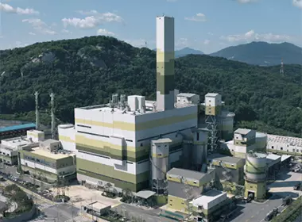
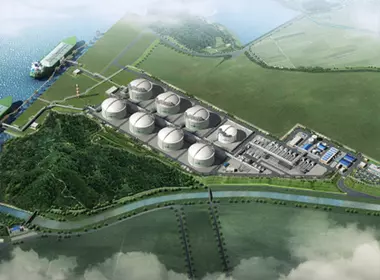
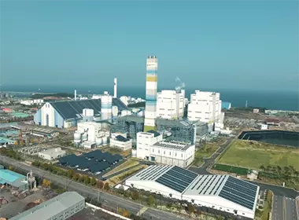
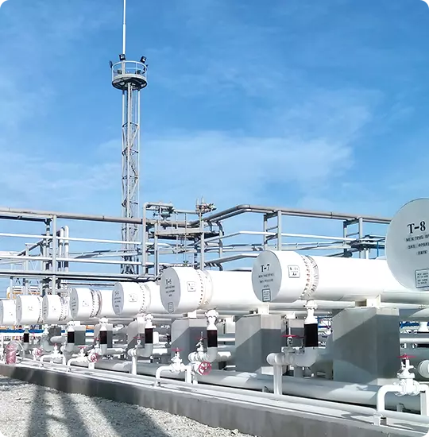
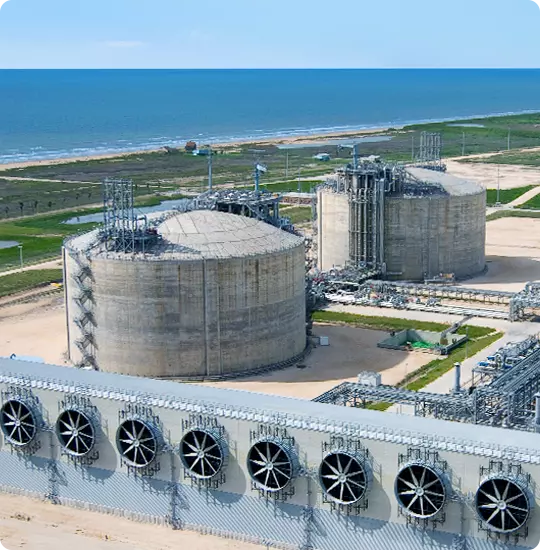

>
사업영역
> 에너지환경사업
ECO ENERGY BUSINESS
패러다임 변화를 주도하는 에너지 기업
“GS파워는 전력 및 열공급을 위한 제반 활동에 있어 환경적 요소를 최우선으로 고려합니다.
고객들에게 맑고 깨끗한 Energy를 공급함으로써 최고로 인정받는 기업이 되겠습니다.”
ECO ENERGY BUSINESS
-

- 지역냉난방 사업
- 지역냉난방은 집중된 대규모 시설에서 경제적으로 생산된 열을 이용하여 난방 및 냉방을 공급하는 차세대 도시기반시설입니다. 프레온 가스 대신에 물을 냉매로 사용하기 때문에 환경 개선 효과가 큰 환경친화적인 냉방방식입니다.
-

- 에너지 효율화 사업
- 에너지 효율화 사업은 미활용 에너지 회수 및 기존 에너지 사용시설의 효율화를 위한 최적의 에너지 절약 솔루션을 제공하는 사업으로, GS파워는 최적의 에너지 설비 개선과 프로세스 개선 솔루션을 제공하고 있습니다.
-

- 미활용에너지 회수 사업
- 정부의 녹색성장 및 저탄소배출 정책에 부응하여 도시기반시설로부터 미활용에너지를 회수합니다. 미래 스마트 제로에너지 시티 조성 국책과제에 참여하여 최첨단 도시에너지 공급기술의 개발에 기여하고 있습니다.
OVERSEAS BUSINESS
GS파워는 한국전력공사의 발전부문 매각과 한국지역난방공사 공기업 민영화 작업의 일환으로 정부가 시행한 해외사업 공개경쟁입찰에서 인수자로 최종 결정되어, 우수한 발전소 운영 기술력과 노하우를 앞세워 적극적인 해외시장 개척을 진행하고 있습니다. 전 세계를 대상으로 하는 발전소 건설에서부터 운영 및 유지보수, 기술자문까지 발전분야 전반의 다양하고 전문적인 서비스를 제공하고 있으며, 점점 그 규모와 교류국가를 늘려나가며 세계적인 에너지 기업으로 성장해 나가고 있습니다.

- Palu-3 CFB Power Plant
- 인도네시아 슬라웨시섬의 중부 팔루시 지역에서 수행중인 설비용량 총 100MW 발전소의 O&M 사업입니다.

- 베트남 하띤 Power Plant
- 베트남 하노이 남쪽 300km 떨어진 하띤(HaTinh)성에 있는 발전소이며, O&M 기술지원 사업입니다.

- 네팔 UT-1 Power Plant
- 네팔 수도 카트만두에서 약 70㎞ 떨어진 Trishuli River에 216MW 수력발전소를 건설 및 운영하는 사업입니다.